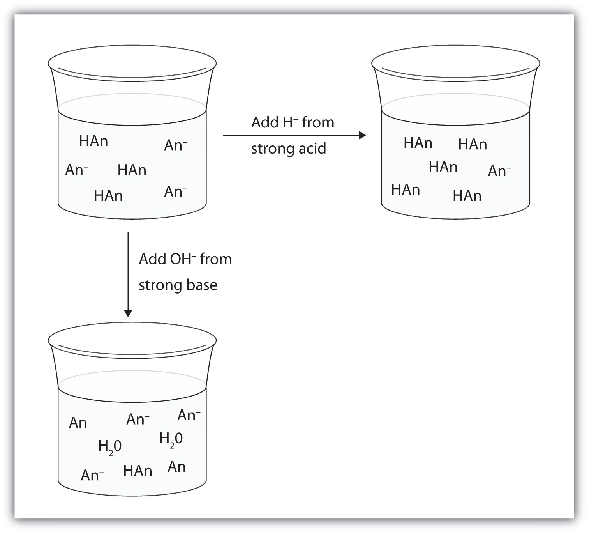

As indicated in Section 10.4 "The Strengths of Acids and Bases", weak acids are relatively common, even in the foods we eat. But we occasionally come across a strong acid or base, such as stomach acid, that has a strongly acidic pH of 1–2. By definition, strong acids and bases can produce a relatively large amount of hydrogen or hydroxide ions and, as a consequence, have a marked chemical activity. In addition, very small amounts of strong acids and bases can change the pH of a solution very quickly. If 1 mL of stomach acid [which we will approximate as 0.05 M HCl(aq)] is added to the bloodstream, and if no correcting mechanism is present, the pH of the blood would go from about 7.4 to about 4.9—a pH that is not conducive to continued living. Fortunately, the body has a mechanism for minimizing such dramatic pH changes.
The mechanism involves a bufferA solution that resists dramatic changes in pH., a solution that resists dramatic changes in pH. Buffers do so by being composed of certain pairs of solutes: either a weak acid plus a salt derived from that weak acid or a weak base plus a salt of that weak base. For example, a buffer can be composed of dissolved acetic acid (HC2H3O2, a weak acid) and sodium acetate (NaC2H3O2, a salt derived from that acid). Another example of a buffer is a solution containing ammonia (NH3, a weak base) and ammonium chloride (NH4Cl, a salt derived from that base).
Let us use an acetic acid–sodium acetate buffer to demonstrate how buffers work. If a strong base—a source of OH−(aq) ions—is added to the buffer solution, those hydroxide ions will react with the acetic acid in an acid-base reaction:
HC2H3O2(aq) + OH−(aq) → H2O(ℓ) + C2H3O2−(aq)Rather than changing the pH dramatically by making the solution basic, the added hydroxide ions react to make water, and the pH does not change much.
Many people are aware of the concept of buffers from buffered aspirin, which is aspirin that also has magnesium carbonate, calcium carbonate, magnesium oxide, or some other salt. The salt acts like a base, while aspirin is itself a weak acid.
If a strong acid—a source of H+ ions—is added to the buffer solution, the H+ ions will react with the anion from the salt. Because HC2H3O2 is a weak acid, it is not ionized much. This means that if lots of hydrogen ions and acetate ions (from sodium acetate) are present in the same solution, they will come together to make acetic acid:
H+(aq) + C2H3O2−(aq) → HC2H3O2(aq)Rather than changing the pH dramatically and making the solution acidic, the added hydrogen ions react to make molecules of a weak acid. Figure 10.3 "The Action of Buffers" illustrates both actions of a buffer.
Figure 10.3 The Action of Buffers
Buffers can react with both strong acids (top) and strong bases (bottom) to minimize large changes in pH.
Buffers made from weak bases and salts of weak bases act similarly. For example, in a buffer containing NH3 and NH4Cl, ammonia molecules can react with any excess hydrogen ions introduced by strong acids:
NH3(aq) + H+(aq) → NH4+(aq)while the ammonium ion [NH4+(aq)] can react with any hydroxide ions introduced by strong bases:
NH4+(aq) + OH−(aq) → NH3(aq) + H2O(ℓ)Which solute combinations can make a buffer solution? Assume all are aqueous solutions.
Solution
Which solute combinations can make a buffer solution? Assume all are aqueous solutions.
NaHCO3 and NaCl
H3PO4 and NaH2PO4
NH3 and (NH4)3PO4
NaOH and NaCl
Buffers work well only for limited amounts of added strong acid or base. Once either solute is all reacted, the solution is no longer a buffer, and rapid changes in pH may occur. We say that a buffer has a certain capacityThe amount of strong acid or base a buffer can counteract.. Buffers that have more solute dissolved in them to start with have larger capacities, as might be expected.
Human blood has a buffering system to minimize extreme changes in pH. One buffer in blood is based on the presence of HCO3− and H2CO3 [H2CO3 is another way to write CO2(aq)]. With this buffer present, even if some stomach acid were to find its way directly into the bloodstream, the change in the pH of blood would be minimal. Inside many of the body’s cells, there is a buffering system based on phosphate ions.
At this point in this text, you should have the idea that the chemistry of blood is fairly complex. Because of this, people who work with blood must be specially trained to work with it properly.
A blood bank technology specialist is trained to perform routine and special tests on blood samples from blood banks or transfusion centers. This specialist measures the pH of blood, types it (according to the blood’s ABO+/− type, Rh factors, and other typing schemes), tests it for the presence or absence of various diseases, and uses the blood to determine if a patient has any of several medical problems, such as anemia. A blood bank technology specialist may also interview and prepare donors to give blood and may actually collect the blood donation.
Blood bank technology specialists are well trained. Typically, they require a college degree with at least a year of special training in blood biology and chemistry. In the United States, training must conform to standards established by the American Association of Blood Banks.
Explain how a buffer prevents large changes in pH.
A buffer has components that react with both strong acids and strong bases to resist sudden changes in pH.
Describe a buffer. What two related chemical components are required to make a buffer?
Can a buffer be made by combining a strong acid with a strong base? Why or why not?
Which solute combinations can make a buffer? Assume all are aqueous solutions.
Which solute combinations can make a buffer? Assume all are aqueous solutions.
For each combination in Exercise 3 that is a buffer, write the chemical equations for the reactions of the buffer components when a strong acid and a strong base is added.
For each combination in Exercise 4 that is a buffer, write the chemical equations for the reaction of the buffer components when a strong acid and a strong base is added.
The complete phosphate buffer system is based on four substances: H3PO4, H2PO4−, HPO42−, and PO43−. What different buffer solutions can be made from these substances?
Explain why NaBr cannot be a component in either an acidic or a basic buffer.
Two solutions are made containing the same concentrations of solutes. One solution is composed of phosphoric acid and sodium phosphate, while the other is composed of hydrocyanic acid and sodium cyanide. Which solution should have the larger capacity as a buffer?
Two solutions are made containing the same concentrations of solutes. One solution is composed of ammonia and ammonium nitrate, while the other is composed of sulfuric acid and sodium sulfate. Which solution should have the larger capacity as a buffer?
A buffer resists sudden changes in pH. It has a weak acid or base and a salt of that weak acid or base.
3b: strong acid: H+ + NO2− → HNO2; strong base: OH− + HNO2 → H2O + NO2−; 3d: strong acid: H+ + NH3 → NH4+; strong base: OH− + NH4+ → H2O + NH3
Buffers can be made by combining H3PO4 and H2PO4−, H2PO4− and HPO42−, and HPO42− and PO43−.
the phosphoric acid–phosphate buffer